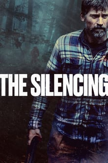

IRMÃO DO JOREL
A série mostra o cotidiano de uma família excêntrica e extravagante. O filho mais novo conhecido apenas pelo nome de "Irmão do Jorel" é ofuscado pela fama e popularidade de seu irmão mais velho Jorel. Junto de sua família composta por seus dois irmãos mais velhos, seu pai, sua mãe, suas duas avós e seu cachorro eles vivem situações típicas de uma família brasileira no final da década de 80.
Lançamentos


